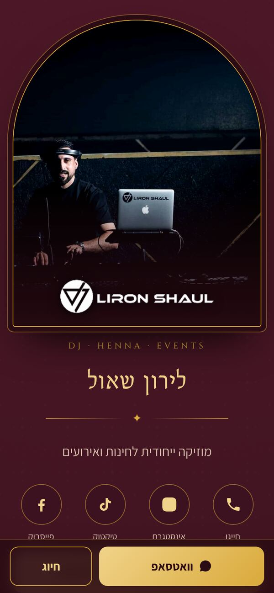
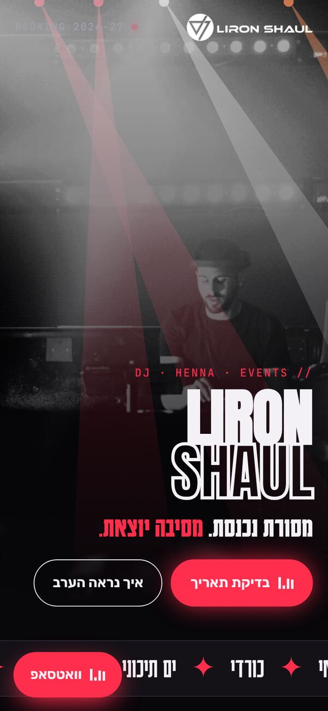
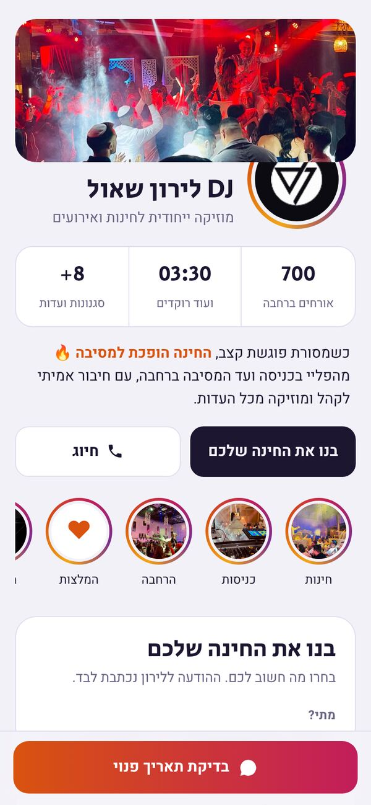

לקחתי מהכרטיס הקיים את הטקסטים, הלוגו, 19 תמונות מהאירועים ו־6 צילומי המלצות מוואטסאפ, ובניתי מהם שלושה כיוונים שונים. כל אחד מהם עובד מהטלפון, מוביל ישר לוואטסאפ ומציג את ההמלצות כטקסט.
לחיצה פותחת את העיצוב המלא. כדאי לפתוח מהטלפון, כי שם הלקוחות שלך יראו אותו.

יוקרתי ואלגנטי. בורדו עמוק וזהב (הצבע שכבר יש לך), תמונות במסגרות של קשתות מרוקאיות כמו באולמות החינה, וציר זמן של ערב חינה.
פתיחת העיצוב ←
אנרגיה של מועדון. תמונת שחור־לבן עם אלומות אור זזות, טיפוגרפיה ענקית, "סט ליסט" של הערב עם BPM וגלריה כמו פס צילום.
פתיחת העיצוב ←
הכי חדשני. נראה כמו אפליקציה: סטוריז כמו באינסטגרם (תמונות והמלצות), ו"בנו את החינה שלכם": הזוג בוחר תאריך, כמות אורחים, עדה ורגעים, וההודעה אליך נכתבת לבד.
פתיחת העיצוב ←לפי סדר חשיבות. את כל אלה כבר יישמתי בשלושת העיצובים.
phone=9720524582640, עם 0 מיותר אחרי 972. בחלק מהמכשירים הוא לא יפתח שיחה איתך. הנכון: wa.me/972524582640.אפשר גם לשלב: למשל את הזהב מעיצוב 1 עם "בונה החינה" מעיצוב 3.
כתובת כמו djlironshaul.co.il, עם אחסון חינמי (Netlify / GitHub Pages). הקוד כבר מוכן.
שלט קטן עם QR לכרטיס בכל אירוע. האורחים של היום הם הזוגות של מחר.
Google Business עם קישור לכרטיס וההמלצות, כדי להופיע בחיפוש "DJ לחינה".
הערה: בתוך התצוגה הזו כפתורי החיוג והמייל לא תמיד נפתחים. כשהכרטיס יעלה לכתובת משלו, הכל יעבוד כרגיל. שאלות ה־FAQ ולוח הזמנים בעיצוב 2 הם דוגמה ואפשר לערוך אותם.